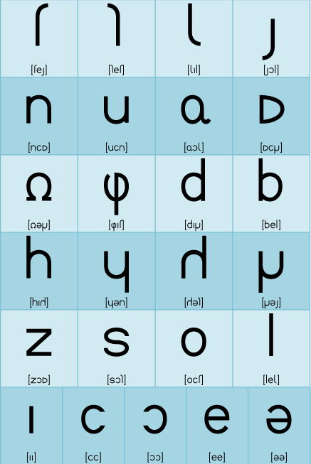

|
単音

というわけで、アルシェさんに来てもらいましたー！(ﾊﾟﾁﾊﾟﾁ

やぁ紫苑。アルカ耳を獲得したいんだって？俺でよければ協力するよ。

こんにちは、アルシェさん。すみません、お忙しいところ……。

いやいや全然。ちょうど暇してたんだ。それで、まずどこから練習しようか。

私はもうある程度喋れますけど読者さんは初めてかもしれないので、幻字の発音からお願いします。
それに個々の単音の発音にしても私やっぱり日本語なまりになっちゃってるかもしれないから、自分の復習も兼ねてお願いします。

了解。じゃあまず下の幻字表を見て。一文字ずつ文字の名前を読み上げるよ。
まずは聴き取ってほしい。次に幻字表の各文字の読みを見て、もう一度聴きながら今度は発音を真似てほしい。
音声ダウンロード
音量は上限が0DBに合わせてあります。
まずプレイヤー側で小さめの音量にしてから再生し、適切な音量に上げていただくようお願いいたします。


cukの音がちょっと難しいの。イタリア語やべらんめぇ調のラ行と同じなんだけど……。
ちなみに、女の子はこの音の代わりに日本語のラ行を使います。

それとjokなんだけど、これはdjokにしないようにね。

dが付いているのといないのでは何か違うの？

試しにジャパンて発音をしてみて。舌の先っぽが歯茎の裏に付くでしょ？
それから工場って言ってみて。「じょ」の部分で、今度は舌の先っぽが歯茎の裏に近付きはすれど、くっつきはしないでしょ。
ジャパンのjがdjで、工場のjがただのjなのよ。
なるほど。てことはjokを発音するときは、工場の「じょ」の音みたいに発音すればいいんだね。
これはzでも同じかな。「残業」って発音するときは「ざ」の部分がdzになっているけど、鉱山て発音するときはただのzになっている。
だからzokを発音するときは鉱山の「ざ」の音みたいに発音するってことね。

単音についてはこのぐらいかしら。
あまりしつこく言葉で説明しても分かりづらいでしょうから、繰り返し聞いて耳で覚えたほうがいいかもしれないわね。
|